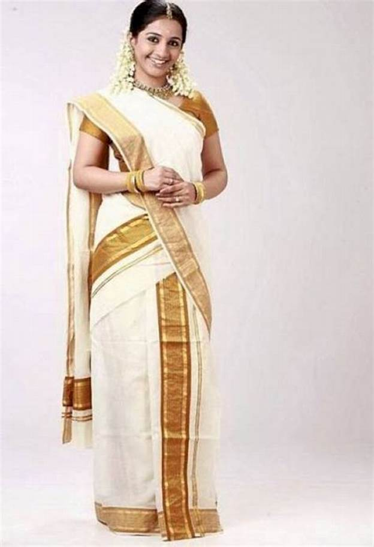

|  |
A sari, saree or shari is a female
garment from the Indian subcontinent that
consists of a drape varying from five to
nine yards in length and two to four feet
in breadth that is typically wrapped around
the waist, with one end draped over the shoulder,
baring the midriff |
|  |
The traditional attire of the Assamese people
is Dhoti-Kurta for men and Mekhla- Chadar for the womenfolk.
Mekhla-Chadar or the traditional sari is an ensemble of two
or three pieces, one of which is worn as the petticoat and
the other as the ‘anchal’ sari. |
| |
In Odisha, women wear different types of saris,
which makes for glowing the beauty of women. Odisha is
famous for Kataki Sari and Sambalpuri Sari. These sari
designs contain very peculiar designs and seem very
dignified Most of the women in Odisha interested in
wearing these saris during festival occasions,
Marriage occasions and other auspicious days.
Shalwar Kameez is famous costumes in India,
here the girls also interest to the Shalwar Kameez. |
|  |
The traditional dresses of Tamil Nadu are
famous in the world, for their grace and beauty.
In the modern era, Jeans, T-shirts, shirts, skirts
and tops have also made their way into the dressing
culture of Tamil Nadu. However, in the time of festivals
or celebrations, Tamilians still prefer their traditional dresses. |
| |
Punjabi style A popular, comfortable and convenient
dress worn by the women of Punjab is the Churidar Kurta.
This was traditionally the dress worn in Punjab, but
is now worn almost everywhere, particularly among
the younger generations. |
|  |
Jammu And Kashmir Dress The
traditional dresses of Jammu and Kashmir are renowned for
their embroidery and intricate designs that reflect the
rich of the culture and landscape of the region.
The form of clothing is designed primarily to
counter the cold climate of the region. |